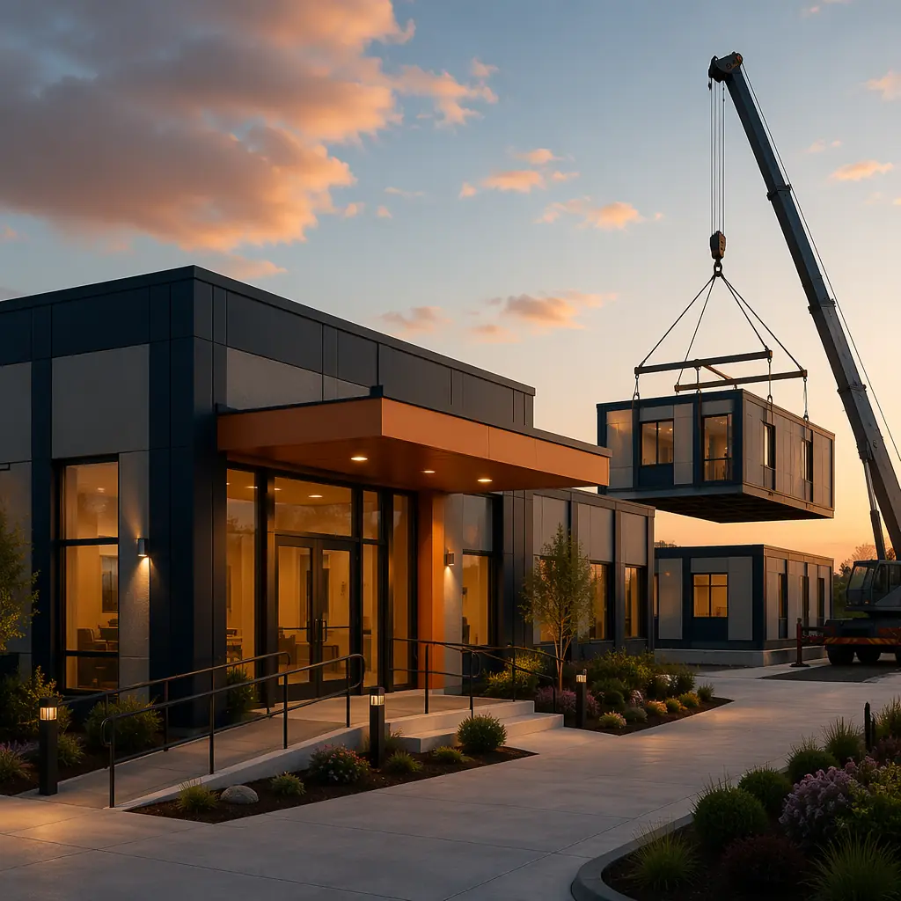
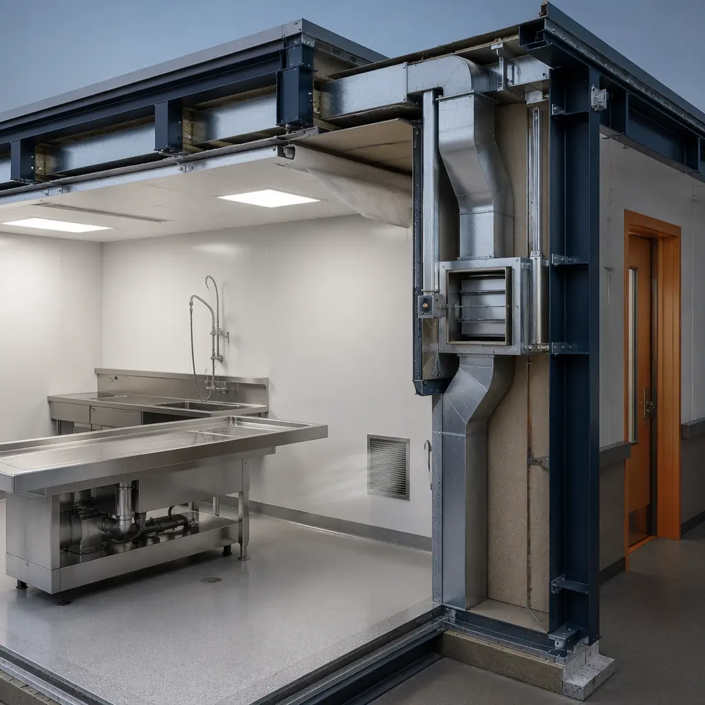
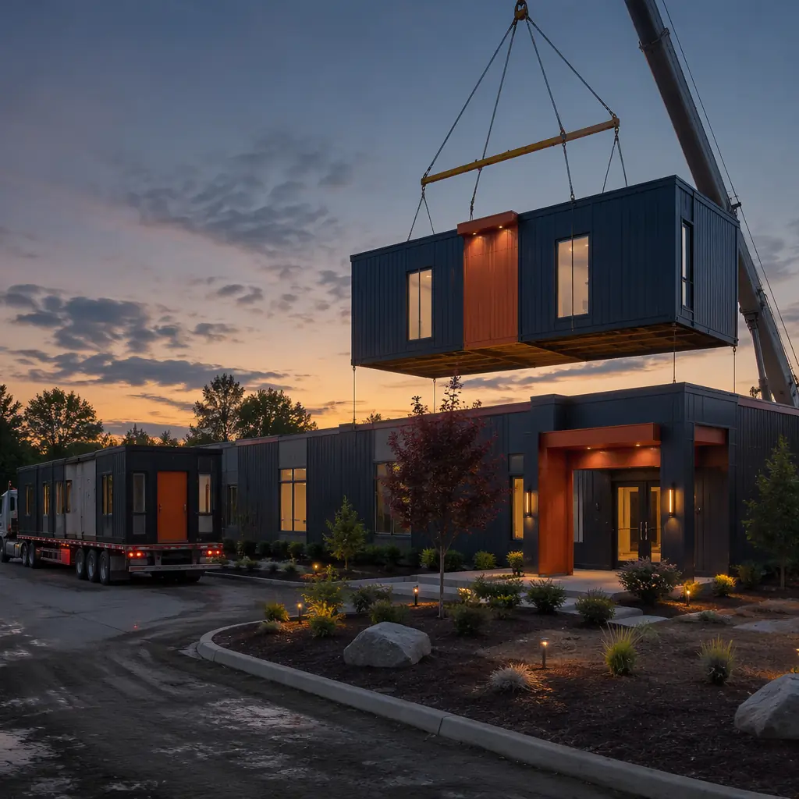

The United States death care industry encompasses approximately 19,000 funeral homes and 2,300 crematories generating $20.1 billion in annual revenue, with an aging population projected to increase annual deaths from 3.4 million in 2026 to 4.2 million by 2040 according to the Census Bureau. Over 35% of existing funeral homes were constructed before 1985 and lack modern ventilation systems capable of meeting OSHA formaldehyde exposure limits (0.75 ppm over an 8-hour time-weighted average), climate-controlled visitation areas with independent HVAC zoning for multiple simultaneous services, and ADA-compliant access throughout public areas — deficiencies that directly impact staff health, family comfort, and regulatory compliance. A traditional ground-up funeral home takes 14–22 months from site acquisition to occupancy, with every month of construction representing lost revenue opportunity and extended lease costs at temporary facilities. Modular prefabricated construction compresses the delivery timeline to 8–13 months by manufacturing 75–85% of the building — including pre-piped embalming suites with OSHA-compliant ventilation, factory-fitted crematory equipment bays with high-temperature exhaust ductwork, and climate-controlled visitation modules — under factory quality control while site work proceeds concurrently. For death care operators expanding into adjacent service categories, our experience with modular medical clinic and outpatient facility construction demonstrates the same controlled-environment manufacturing advantages for healthcare-adjacent building types.

The Hidden Complexity of Funeral Home Construction — Specialized Systems That Conventional Builders Get Wrong
Funeral homes appear architecturally straightforward — they resemble well-appointed residential or light commercial buildings — but their mechanical, electrical, and plumbing systems are among the most specialized in any building type. The facility must simultaneously support three functionally distinct environments: public-facing spaces requiring residential-comfort HVAC with precise temperature and humidity control for occupant comfort during extended visitation periods; embalming and preparation areas requiring industrial-grade ventilation with OSHA-compliant chemical fume exhaust and negative air pressure relative to adjacent spaces; and, in facilities with on-site crematories, equipment bays that generate 1,400–1,800°F exhaust temperatures requiring refractory-lined stainless steel ductwork with independent combustion air supply. The consequence of getting any of these three systems wrong is not merely operational inconvenience — formaldehyde exposure violations carry OSHA fines of up to $16,131 per violation, and crematory exhaust system failures can force complete facility shutdown during peak demand periods.
- Embalming suite ventilation and chemical safety: OSHA Standard 1910.1048 mandates that formaldehyde exposure in preparation rooms must not exceed 0.75 ppm over an 8-hour time-weighted average, with an action level of 0.5 ppm triggering mandatory exposure monitoring and medical surveillance. Achieving compliance requires a dedicated exhaust system with 12–15 air changes per hour, exhaust intake positioned at table height (not ceiling-level, since formaldehyde vapor is heavier than air), and negative air pressure relative to adjacent corridors to prevent vapor migration into public areas. Modular construction installs and tests the embalming suite ventilation system in the factory — ductwork, exhaust fans, chemical-resistant interior finishes, and pressure differential monitors are pre-installed before the module leaves the factory floor. The system is performance-tested with tracer gas to verify containment before site delivery, eliminating the field-commissioning uncertainty that makes conventional funeral home ventilation compliance a recurring OSHA citation source;
- Crematory equipment bay engineering: A modern crematory retort generates exhaust gas temperatures of 1,400–1,800°F at the primary chamber outlet and 1,600–2,000°F at the secondary afterburner. The exhaust ductwork — typically 12–16 inch diameter refractory-lined stainless steel — must maintain a minimum 6-inch clearance from combustible materials along its entire length and terminate above the roof line with a dispersion stack. Modular construction builds the crematory bay as a dedicated module with the refractory-lined chase pre-installed, the combustion air intake louver factory-cut with weather hood, and the equipment pad structurally reinforced for the 8,000–12,000 lb retort weight. This factory approach eliminates the 6–8 weeks of on-site refractory installation and equipment coordination that dominates conventional crematory construction;
- Multi-zone climate control for simultaneous services: A mid-size funeral home operating 3–4 visitation rooms simultaneously requires independent HVAC zoning for each room — family groups in different visitation rooms have different temperature preferences, and a chapel space with 150 occupants generates a heat load of approximately 60,000 BTU/hr from occupant body heat alone that must be managed independently from adjacent unoccupied spaces. Modular construction delivers each visitation room as a self-contained module with its own HVAC zone, factory-balanced for the room's design occupancy, eliminating the field-air-balancing complexity of conventional multi-zone funeral home HVAC.
The factory approach to funeral home construction eliminates what conventional builders consistently underestimate: the 10–14 weeks of specialty subcontractor coordination — ventilation engineers, crematory equipment installers, refrigeration contractors, and infection control consultants — that makes funeral home construction timelines unpredictable and budgets volatile. Our analysis of modular construction factory QC systems documents how controlled-environment manufacturing delivers the specification compliance that death care facilities require.

Phased Occupancy — Keeping the Business Operating During Construction
For existing funeral home operators replacing or expanding their facility, the construction phase presents a unique business continuity challenge: families in grief do not reschedule services because the building is under renovation, and a funeral home operating from temporary trailers or rented church halls loses the professional atmosphere that families expect during their most vulnerable moments. Conventional construction forces a binary choice — build an entirely new facility on a separate site (doubling land cost and requiring relocation of all operations), or attempt to operate in one portion of the building while the other is demolished and rebuilt (creating noise, dust, and access disruptions incompatible with funeral service delivery).
Modular construction enables phased occupancy that preserves business continuity. Because each functional zone is built as a completed factory module, the operator can sequence the transition: Phase 1 — the new visitation room modules and chapel module are delivered and commissioned on the prepared foundation, allowing all public-facing services to transfer to the new facility while the original building continues to house embalming and administrative functions; Phase 2 — the embalming suite module is delivered, commissioned, and the preparation function transfers to the new facility with OSHA ventilation verification completed before any procedures begin; Phase 3 — the crematory bay module (if applicable) is delivered and commissioned last, allowing the retort to be installed and tested before decommissioning the original equipment. The business never closes during the transition, and families experience continuous, uninterrupted service in professional facilities throughout the construction period. This phased approach draws on the same operational continuity methodology we apply to modular hospital construction, where clinical operations cannot pause during facility replacement.
![Factory floor of modular prefabricated construction facility, completed funeral home visitation room module with warm interior finishes, upholstered seating pre-installed, dimmable lighting system with factory-wired control panel, acoustic ceiling panels for sound privacy between adjacent visitation rooms, dedicated HVAC zone unit visible above ceiling grid, workers performing final quality inspection and finish detailing, dark navy wall panels with warm steel orange accent on door frames and trim](../generated/funeral-factory.webp)
Cost Structure — Modular Funeral Home Economics vs. Traditional Construction
| Cost Category | Traditional (12,000 sq ft) | Modular (12,000 sq ft) |
|---|---|---|
| Base building shell & envelope | $2.2–2.8M | $1.9–2.4M |
| Specialized ventilation & HVAC systems | $480–650K (field-coordinated) | $340–420K (factory-integrated) |
| Embalming suite & preparation area | $280–380K | $195–270K |
| Crematory equipment bay (if applicable) | $320–450K | $220–310K |
| On-site general conditions | 14–22 months × $28K/month = $392–616K | 8–13 months × $28K/month = $224–364K |
| Total Project Cost Range | $3.7–4.9M | $2.9–3.8M |
Cost savings of $800K–1.1M (21–23%) are driven by factory labor productivity for specialized system installation (the embalming suite ventilation ductwork, chemical-resistant finishes, and pressure differential controls that require 3–4 separate subcontractors in conventional construction are integrated by a single factory team), reduced on-site general conditions (6–9 months of savings), and eliminated specialty subcontractor mobilization costs (ventilation engineers and crematory equipment installers typically charge $15,000–25,000 in mobilization fees for each site visit — costs that factory construction eliminates entirely). For operators evaluating the full ownership economics, see our analysis of modular building lifecycle costs which documents 18–22% lower maintenance expenditures for factory-built facilities. For death care operators concerned about construction financing, our guide to modular construction financing covers SBA 504 loans, conventional commercial mortgages, and equipment financing structures available for funeral home construction.

Regulatory Compliance — How Factory Construction Meets Death Care Facility Standards
Funeral home construction must satisfy a regulatory framework spanning building codes (IBC Occupancy Classification B for Business), OSHA workplace safety standards (29 CFR 1910.1048 for formaldehyde, 29 CFR 1910.1030 for bloodborne pathogens), state funeral board facility requirements (varying by state but typically requiring separate embalming room with specific dimensions and equipment), and NFPA fire protection standards (crematory equipment falls under NFPA 86 for ovens and furnaces). Modular construction addresses each through the same factory quality system that serves our healthcare and laboratory facility programs:
- OSHA formaldehyde compliance: The embalming suite module is factory-built with chemical-resistant epoxy floors (3/8-inch minimum thickness with integral cove base extending 6 inches up all walls), seamless stainless steel countertops with integrated sink and aspiration system, dedicated exhaust ductwork with table-height capture grilles sized for 12–15 air changes per hour, and a pressure differential monitoring system with visual alarm at the entry door. The complete system is tested in the factory using tracer gas to verify that formaldehyde vapor does not migrate from the preparation room into adjacent corridors under normal operating conditions — a level of commissioning verification that field-built funeral homes rarely achieve before occupancy;
- Crematory equipment code compliance: The crematory bay module is built with a refractory-lined exhaust chase (rated for 2,000°F continuous operation), structural reinforcement for the retort equipment pad (designed for 200 pounds per square foot live load to accommodate equipment installation and maintenance access), independent combustion air intake sized per manufacturer specifications (typically 50–75 square inches of net free area per retort), and a high-temperature fire suppression system (dry chemical or clean agent, as water-based sprinklers can cause thermal shock damage to refractory-lined equipment). The chase and clearances are inspected in the factory before module delivery, eliminating the 3–5 field inspections typically required for conventional crematory construction;
- Bloodborne pathogen and infection control: The preparation area module includes a dedicated hand-washing sink with hands-free operation, an emergency eyewash station plumbed with tepid water (60–100°F per ANSI Z358.1), biohazard waste storage with separate ventilation, and surfaces that meet OSHA 1910.1030 requirements for decontamination (non-porous, cleanable, with sealed seams and corners).
Death care operators in 18 countries have deployed MODURA modular facilities for applications ranging from single-location funeral homes (4,500 sq ft, 2 visitation rooms, 1 embalming suite) to combined funeral home and crematory complexes (14,000 sq ft, 4 visitation rooms, 1 chapel, 2 embalming suites, 2 retort bays). Each facility is factory-built to ISO 9001 quality standards, with OSHA-compliant ventilation, climate-controlled visitation areas, and crematory infrastructure integrated during module fabrication rather than coordinated across multiple field subcontractors. The result is a funeral home that enters service 6–9 months faster than conventional construction, costs 21–23% less over the total project lifecycle, and delivers the professional, dignified environment that families deserve during their most difficult moments. See our related analysis of modular medical clinic construction for how the same regulatory compliance approach applies to healthcare facilities, and our guide to modular building additions for operators considering facility expansion rather than new construction.
![Factory-completed interior of modular funeral home visitation room, warm wood-toned finishes with upholstered seating arranged in conversational groupings, dimmable LED lighting system with multiple scene presets, acoustic ceiling panels for sound privacy, module seam visible at wall junction between adjacent visitation room modules, large window with factory-installed insulated glazing, dark navy accent wall with warm steel orange detail on door frame and baseboard trim, professional and dignified atmosphere](../generated/funeral-interior.webp)